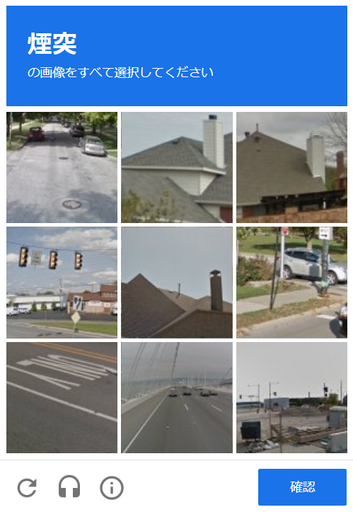
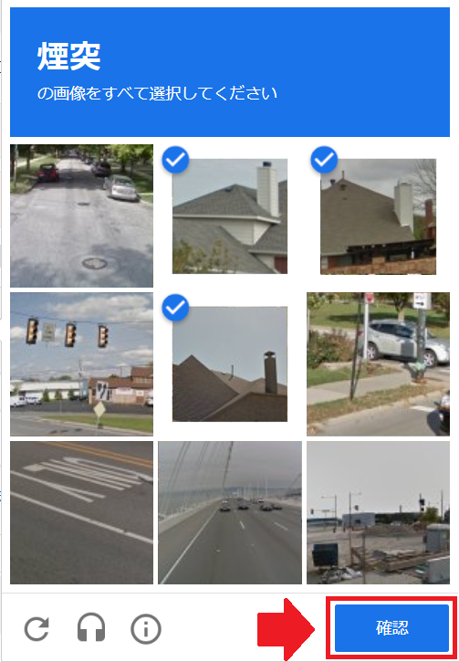

reCAPTCHAとは
Googleが無料で提供している、"botと人間を区別するため"のサービスです。
また、botと人間を区別するための試験のことを、"CAPCHA"と言います。
"CAPTHA"自体はGoogle以外の企業も提供してますが、"reCAPTCHA"と表記されている場合は、Googleが提供したサービスを指します。
"CAPCHA"と"reCAPTCHA"の違い
- CAPCHA ・・・botと人間を区別するための試験、Google以外の企業もサービスを提供
- reCAPCHA・・・Googleが提供している無料サービスの名称。
認証方法
1."私はロボットではありません"のボタンをクリックする。

※上図のどこかをクリック
2.表示された内容に従って操作を行う。
<指定された物の画像を選択する場合>
指定された物が映っている画像をクリックする。


→
<指定された物が表示されている部分を選択する場合>
指定されたものが全部選択できるように画像を選択する。

→

3."確認"ボタンをクリックする。
4.チェックマークが付けられれば認証成功！！

※方法通りに行ってもうまくいかない場合は、ページ自体を更新、もしくは、下図で示している部分のマークをクリックすると新たに認証作業を行うことができます。

※チェックマークがついた状態で約1分放置すると、期限切れになるので注意してください。